<!DOCTYPE html>
<html>
  <head>
    <title>26 11 000 Removing and Installing Propeller Shaft (Cardan Universal Joint) Completely — 2011 BMW 128i Coupe (E82) L6-3.0L (N52K) Service Manual | Operation CHARM</title>
    <meta name='description' content="Detailed repair manual for the 2011 BMW 128i Coupe (E82) L6-3.0L (N52K).">
    <link rel='stylesheet' href="../style.css">
    <meta name='viewport' content='width=device-width, initial-scale=1.0' />
  </head>
  <body>
    <div class='theme-colors header'>
      <div class='branding'><b>Operation CHARM</b>: Car repair manuals for everyone.</div>
<div class=breadcrumbs><a class='breadcrumb-part' href="../">Home</a> <b>&gt;&gt;</b> <a class='breadcrumb-part' href="../BMW/">BMW</a> <b>&gt;&gt;</b> <a class='breadcrumb-part' href="../BMW/2011/">2011</a> <b>&gt;&gt;</b> <a class='breadcrumb-part' href="../index.html">128i Coupe (E82) L6-3.0L (N52K)</a> <b>&gt;&gt;</b> <a class='breadcrumb-part' href="0.html">Repair and Diagnosis</a> <b>&gt;&gt;</b> <a class='breadcrumb-part' href="0.html#Transmission%20and%20Drivetrain/">Transmission and Drivetrain</a> <b>&gt;&gt;</b> <a class='breadcrumb-part' href="0.html#Transmission%20and%20Drivetrain/Drive%2FPropeller%20Shafts%2C%20Bearings%20and%20Joints/">Drive/Propeller Shafts, Bearings and Joints</a> <b>&gt;&gt;</b> <a class='breadcrumb-part' href="1252.html">Drive/Propeller Shaft</a> <b>&gt;&gt;</b> <a class='breadcrumb-part' href="1252.html#Service%20and%20Repair/">Service and Repair</a> <b>&gt;&gt;</b> <a class='breadcrumb-part' href="10126.html">26 11 000 Removing and Installing Propeller Shaft (Cardan Universal Joint) Completely</a></div></div>
<div class="theme-colors floaty-message lemon-message">
  <b style="font-size: 1.5em; color: gold">Manuals through 2025 now available!</b>
  <br><br>
  Our trusted friends have launched a new website named LEMON, which has newer manuals. It also contains all the CHARM manuals.
  <br><br>
  LEMON is the spiritual successor to  CHARM, I recommend you try it!
  <br><br>
  Link: <a style='white-space: nowrap' href="../missing-page">lemon-manuals.la</a> or <a style='white-space: nowrap' href="../missing-page">lemon-manuals.org.ua</a>
  <br><br>
  (Some people have issue connecting. LEMON is investigating. For now, use Firefox or change your DNS server)
  <br><br>
  Or, hide this message: <a href="../missing-page">temporarily</a> or <a href="../missing-page">permanently</a>
</div>
<div class='main'>
<h1>26 11 000 Removing and Installing Propeller Shaft (Cardan Universal Joint) Completely</h1><br><br><b>26 11 000 Removing and installing propeller shaft (cardan universal joint) completely</b><br><br><b>Special tools required:</b><br><br><br><div class='oxe-image'></div><br><br><br><br><br><b>IMPORTANT:</b><br><span class='indent-2'>&#09;</span>-<span class='indent-5'>&#09;</span>With four-wheel drive and on renewal only:<br><span class='indent-5'>&#09;</span>according to installation with BMW diagnosis and information system under control unit function<br><span class='indent-5'>&#09;</span>Perform function check of transfer box (calibration)<br><br><br><div class='oxe-image'></div><br><br><br><br><br>Necessary preliminary tasks:<br><span class='indent-2'>&#09;</span>-<span class='indent-5'>&#09;</span>Remove front silencer (N45/N46/N46T/N45T/N53)<br><span class='indent-2'>&#09;</span>-<span class='indent-5'>&#09;</span>Remove complete exhaust system<br><span class='indent-2'>&#09;</span>-<span class='indent-5'>&#09;</span>Remove underbody protection<br><span class='indent-2'>&#09;</span>-<span class='indent-5'>&#09;</span>Remove heat shields<br><br><br><div class='oxe-image'></div><br><br><br><br><br><b>IMPORTANT:</b><br>To avoid buzzing sound after refitting the propeller shaft:<br><span class='indent-2'>&#09;</span>1.<span class='indent-5'>&#09;</span>The flexible disc connection (1) on the front at the propeller shaft must be marked in one plane with the flexible disc (2) and the three-bolt flange (3) before removal.<br><span class='indent-2'>&#09;</span>2.<span class='indent-5'>&#09;</span>During installation the three bolt flange (3) must be forced back together again with the flexible disc (2) in the same position.<br><br><br><div class='oxe-image'></div><br><br><br><br><br>Release screws.<br><br><b>Installation note:</b><br><span class='indent-2'>&#09;</span>-<span class='indent-5'>&#09;</span>Replace ZNS bolts and self-locking nuts.<br><span class='indent-2'>&#09;</span>-<span class='indent-5'>&#09;</span>Grip mounting bolts of flexible disc at nuts and tighten down by way of bolts.<br><br><br><div class='oxe-image'>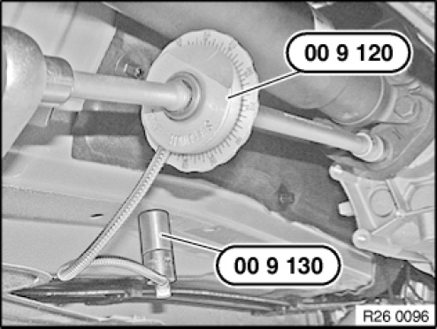</div><br><br><br><br><br>Tighten down screws/bolts to specified torque.<br>Secure special tightening angle tool 00 9 120 with magnets 00 9 130 to underbody and continue to bolt according to tightening angle. Tightening torque: 26 11 1AZ.<br><br><br><div class='oxe-image'>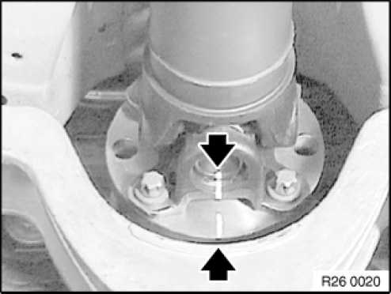</div><br><br><br><br><br><b>IMPORTANT:</b><br>To avoid complaints of humming:<br>Before removing propeller shaft, mark cardan universal joint to drive flange of rear axle final drive.<br>Reinstall joint in accordance with marking.<br><br><b>NOTE:</b>  Graphic similar<br><br><br><div class='oxe-image'>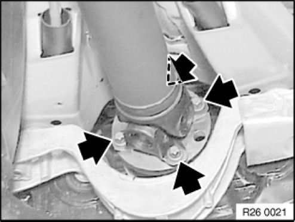</div><br><br><br><br><br>Release screws.<br><br>Installation note: <br>Replace ZNS bolts.<br><br><b>NOTE:</b>  Graphic similar<br><br><br><div class='oxe-image'>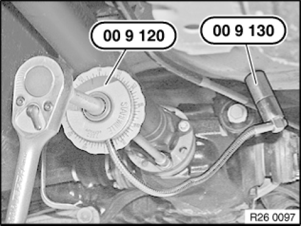</div><br><br><br><br><br>Tighten down screws/bolts to specified torque.<br>Secure special tightening angle tool 00 9 120 with magnets 00 9 130 to underbody and continue to bolt according to tightening angle.<br>Tightening torque: 26 11 4AZ.<br><br><br><div class='oxe-image'>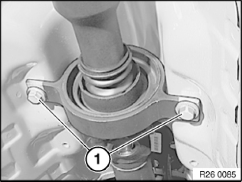</div><br><br><br><br><br>Grip propeller shaft at centre mount and release screws.<br>Tightening torque: 26 11 6AZ.<br>Detach propeller shaft from transmission output flange and remove towards bottom.<br><br><br><div class='oxe-image'>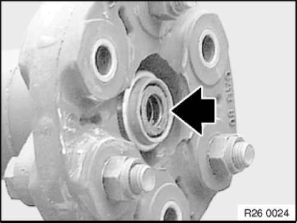</div><br><br><br><br><br><b>Installation note:</b><br>Check centring mount.<br>If necessary, replace damaged centre bearing.<br>Grease centring mount.<br><span class='indent-2'>&#09;</span>-<span class='indent-5'>&#09;</span>Grease: BMW Service Operating Fluids.<br><br><br><h3>j����*��:</h3><div class='oxe-image'></div><br><br><br><h3>I��H�:</h3><div class='oxe-image'></div><br><br><br><br><br><h3>;������:</h3><div class='oxe-image'></div><br><br><br><h3>kc�!��:</h3><div class='oxe-image'></div><br><br><br><br><br><h3>���|�E�:</h3><div class='oxe-image'></div><br><br><br><h3>���9��:</h3><div class='oxe-image'>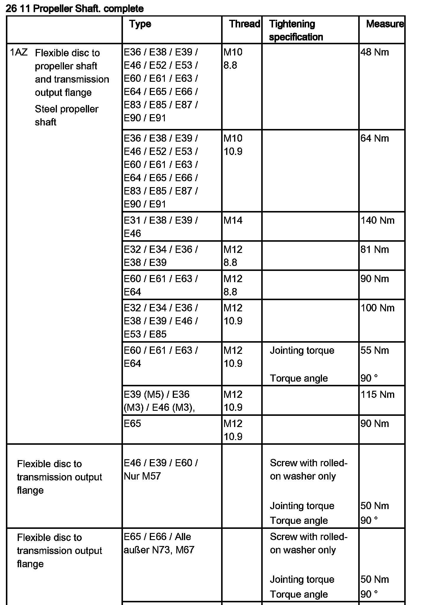</div><br><br><br><div class='oxe-image'>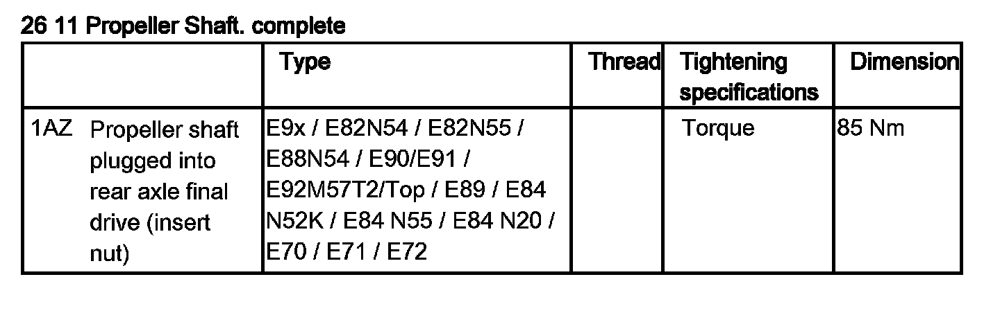</div><br><br><br><br><br><h3>^$�R�m��:</h3><div class='oxe-image'>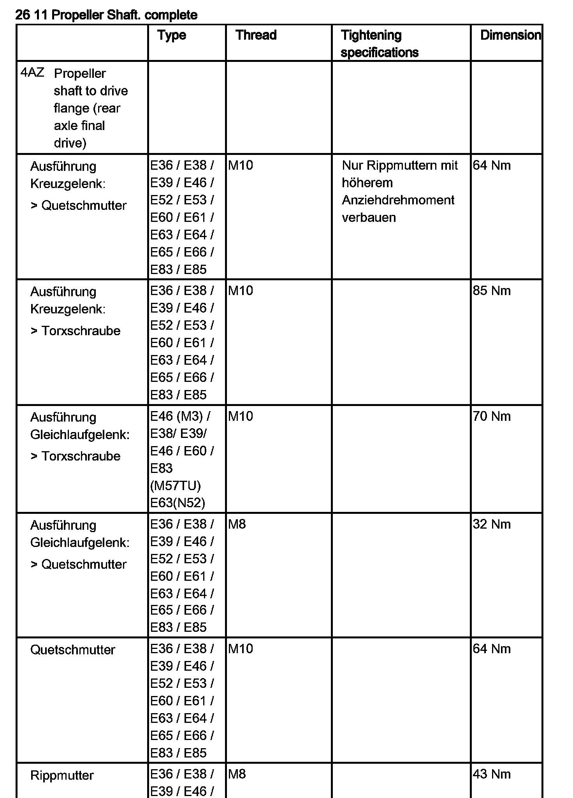</div><br><br><br><h3>p���:</h3><div class='oxe-image'>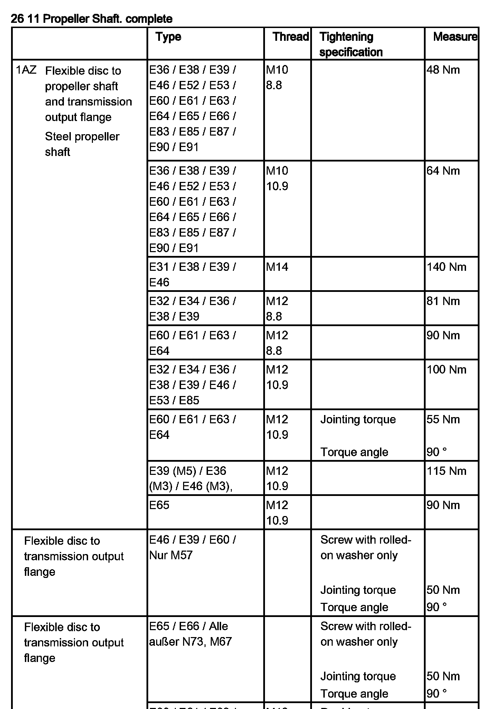</div><br><br><br><br><br><h3>�Q���l��:</h3><div class='oxe-image'></div><br><br><br><h3>]��%0�:</h3><div class='oxe-image'>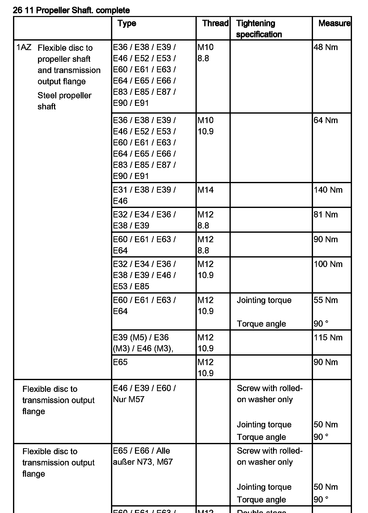</div><br><br><br><br><br><h3>
�����G��:</h3><div class='oxe-image'>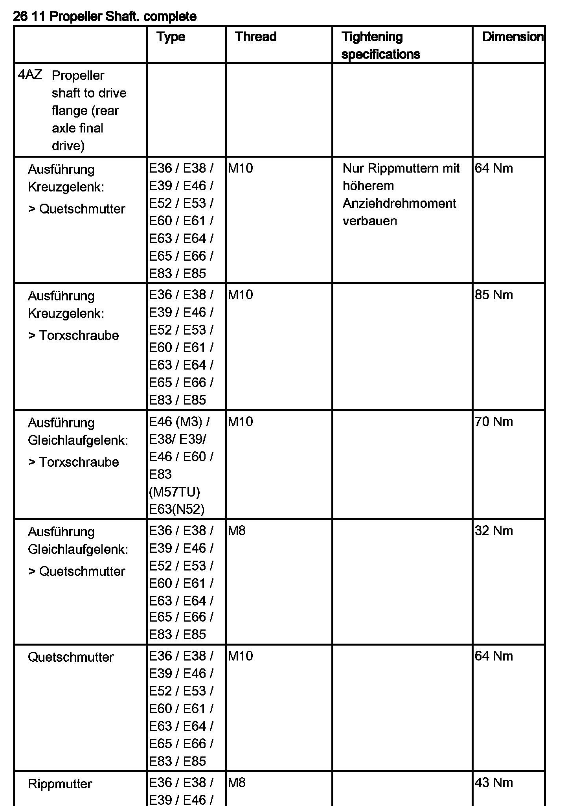</div><br><br><br><h3>�)�P^�:</h3><div class='oxe-image'></div><br><br><br><div class='oxe-image'>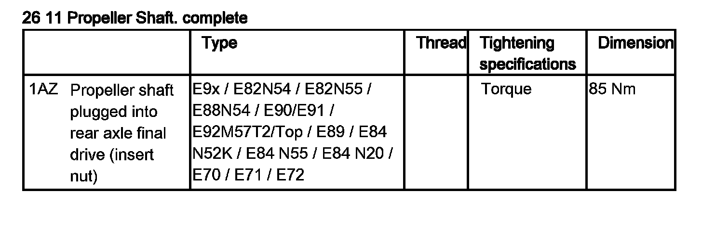</div><br><br><br></div>
<div class="theme-colors footer">
  <i>pro multis</i> · <a href="../about.html">About Operation CHARM</a>
</div>
<script src="../script.js"></script>
</body>
</html>
